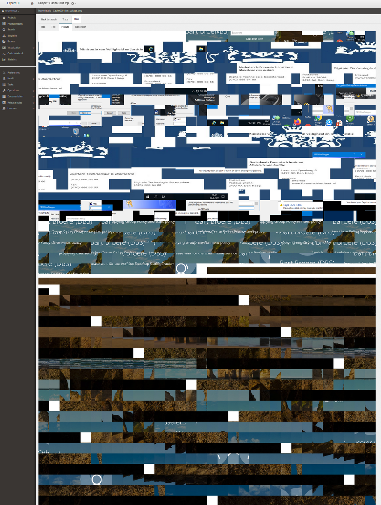
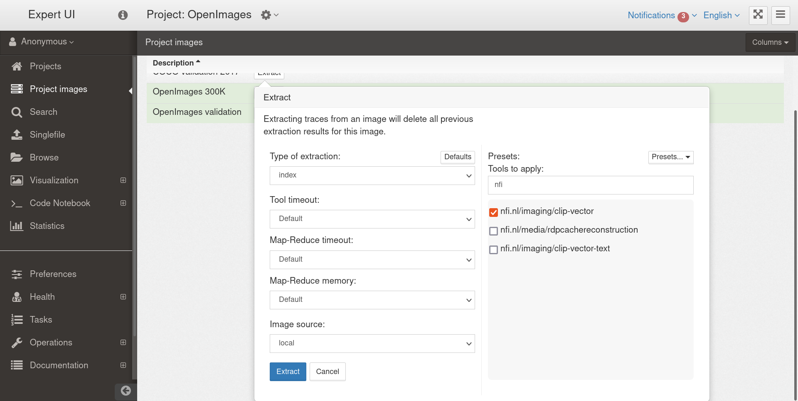

Hansken hackathon
Hogeschool Leiden
29th November 2022
Three parts
- Part 1: hansken.py
- Part 2: Extraction plugins
- Part 3: Artificial Intelligence with Hansken
What is Hansken?
- Forensic search engine
- But also a community that produces scripts, plugins and analyses
Very quick recap
Project - images
1 - N
A Hansken project typically is a case, and can contain multiple images (usually phones, PCs, but also zips are possible).
Each image is a tree of
Part 1: hansken.py
hansken.py is the Python API that uses the REST API
pip install hanskenUse cases:
- Searching for traces
- Exporting traces
- Enriching traces
- Hansken operations
Searching with hansken.py
ProjectContext(...).search
from hansken.connect import connect_project
context = connect_project(
endpoint='https://gatekeeper01.test.hansken.holmes.nl/gatekeeper/',
keystore='https://keystore01.test.hansken.holmes.nl/keystore/',
project='411cefbf-f995-416f-9eb2-3cd2f378ca74')
results = context.search('chatMessage.message:bomb', count=10)
for trace in results:
... # do something with the traces
Seraching with hansken.py
Trace model
All types of metadata fields that can be created, and their types
Under Documentation in the technical UI
If you want to do something with adding machine learning models, check out the prediction type
Searching with hansken.py
.unique_values
Aggregating and counting
... # see the previous slide on how the context object is created
results = context.unique_values('chatMessage.application',
query='chatMessage.message:bomb')
for result in results:
print(result)
# {'value': 'native messages', 'count': 7}
# {'value': 'telegram', 'count': 524}
# {'value': 'whatsapp', 'count' 4489}
➜ ~ python3 -m hansken --help
usage: hansken [-h] [--version] COMMAND ...
positional arguments:
COMMAND
backup start backup of a project
extract start extraction of images linked to a project
grant grant keys for specific or project images to target identity or
identities
mount mount images linked to a project as files inside an empty
directory
quickstart
interactively determine configuration values for use with
hansken.py
shell spawn an interactive python shell
stats generate statistical information for each image linked to a
project
tasks list either open or closed tasks tracked by the Hansken
scheduler
tools print a table of available extraction tools
upload upload an image to Hansken image store
versions print client, server and extraction versions
optional arguments:
-h, --help show this help message and exit
--version show program's version number and exit
from hansken.recipes import report
from hansken.connect import connect_project
context = connect_project(endpoint='http://localhost:9091/gatekeeper/',
project='059c83a1-a38b-4144-a661-4a26fa588071',
keystore='http://localhost:9090/keystore/')
emails = context.search('type:email')
for email in emails:
report.to_pdf('test.pdf', report.render_template('hansken/base.html', title="Test"))
See the hansken.py docs on how to generate exports or printable reports using these methods
Enriching traces
... # Updating the trace itself
trace.update('chatMessage.application', 'Telegram')
trace.update({'chatMessage.message': 'Hi',
'chatMessage.application': 'Telegram'})
... # Adding a child trace with properties
child_trace = trace.child_builder('Name of the child trace')
child_trace.update('picture.width', 100)
child_trace.build()
...
Operations (singlefile image etc.)
...
connection = context.connection # there are other ways to get a Hansken Connection, see docs
connection.upload_singlefile(data, name)
connection.extract_singlefile(singlefile_id)
connection.upload_image(image_id, data)
connection.link_image(project_id, image_id)
connection.extract(project_id, image_id, tools=...)
...
Part 2: Extraction plugins
Extraction plugins run during the Hansken extraction,
define a "matcher", the types of traces they can process
Can produce data streams, metadata fields and child traces
API is very similar to hansken.py
Runs at extraction time
Communicates over gRPC (instead of REST like hansken.py)
matcher
A HQL (Hansken Query Language) query
But..., HQL Light, which means that not everything you try in Hansken's search bar also works here
class BERTEmbeddings(MetaExtractionPlugin):
def plugin_info(self):
plugin_info = PluginInfo(
id=PluginId(domain='nfi.nl', category='media', name='BERT'),
version='2022.8.30',
description='BERT embeddings for chatmessages',
author=Author('Isadora Ellis', 'i.ellis@nfi.nl', 'NFI'),
maturity=MaturityLevel.PROOF_OF_CONCEPT,
webpage_url='https://github.com/netherlandsforensicinstitute/bert-embeddings',
matcher='type=chatMessage', # <-- this is where you put the matcher
license="Apache License 2.0",
resources=PluginResources(maximum_cpu=1, maximum_memory=12000),
)
return plugin_info
Three types of extraction plugins:
ExtractionPlugin: Processes data and metadataMetaExtractionPlugin: Processes metadata onlyDeferredExtractionPlugin: Runs as late as possible, uses data and metadata and can search for more traces
ExtractionPlugin
def process(self, trace, data_context):
data = trace.open().read(data_context.data_size)
In this type of plugin both the trace, and a "data context" are available
The process method is invoked for each trace that matches
MetaExtractionPlugin
def process(self, trace):
chatmessage = trace.get('chatMessage.message', None)
if chatmessage:
embedding = model.encode(chatmessage, batch_size=1)
log.info(str(embedding))
trace.add_tracelet(to_tracelet(embedding))
In this type of plugin just the trace object is present, and it can't access any data streams, just metadata
DeferredExtractionPlugin
def process(self, trace, data_context, searcher):
passwords = searcher.search('account.password')
for password in passwords:
# for this example we assume some kind of decryptor
decryptor.decrypt(trace.open().read(), password)
In this type of plugin an additional searcher object is present. This can be used to find other traces and access their attributes.
Example: decrypting files by trying all passwords in the case
Hansken SDK
Virtualbox with:
- Hansken all-in-one
- IDE's for plugin development
- The Python package
hansken_extraction_plugin - Docker for building the plugins
https://repo.hansken.org/repository/raw-community-releases/hansken-sdk/Hansken_SDK_1.0_rc1.ova
Build a plugin container image using the following command (on your VM):
build_plugin PLUGIN_FILE DOCKER_FILE_DIRECTORY [DOCKER_IMAGE_NAME] [DOCKER_ARGS]
For example:
# from the folder ~/extraction-plugin-examples/python/chat
cd ~/extraction-plugin-examples/python/chat
build_plugin plugin/chat_plugin.py . chatplugin_yourname
# to see if it appears in the list
docker image ls
Debugging a plugin can be done with hansken.py
Add this as your plugin's main to simulate how it runs
# replace BertEmbeddings with your plugin class name and replace the project ID
if __name__ == "__main__":
run_with_hanskenpy(BERTEmbeddings,
endpoint='http://localhost:9091/gatekeeper/',
keystore='http://localhost:9090/keystore/',
project='326c693c-45bc-4648-b8e3-24abb4f43c1d')
Example plugin: RDP Bitmap Cache
- Windows has a cache for the built-in RDP client
- This contains tiles of mostly 64x64 pixels
Cache0000.bin(increasing numbers)
Step 1: Running an extraction plugin
First we recover the bitmaps using an extraction plugin:
git.eminjenv.nl/hanskaton/extraction-plugins/rdp-cache-reconstruction
def process(self, trace, data_context):
"""
Get tiles from the RDP cache on Windows machines.
:param trace: expected to be an RDP cache file
:param data_context: data_context
"""
log.info(f"processing trace {trace.get('name')}")
... # calling the bmc_tools library to process this cache
# from our temporary folder
for tile_bmp in glob(f'{output_directory.name}/*.bmp'):
child_trace = trace.child_builder(name=os.path.basename(tile_bmp))
with open(tile_bmp, 'rb') as tile:
child_trace.update(data={'raw': tile.read()})
child_trace.build()
Step 2: Reconstructing screenshots in a notebook
Part 3: Artificial Intelligence with Hansken
- Well established AI (or data science)
- FIRE: Forensic Image Recognition Engine
imaging/classification/fire - FEEL: Forensic Entity Extraction Library
entity/feel
- FIRE: Forensic Image Recognition Engine
- Upcoming and experimental AI that have been turned into plugins
- CLIP: Model that maps text and images into the same vector space
- Sentence transformers: Representation of text as vectors
FIRE: Forensic Image Recognition Engine
Image recognition for about 20 relevant forensic classes, like money, drugs, firearm and military vehicle
But also, face recognition, video, scene text
FEEL
Extracts structured entities
think creditcard numbers, ZIP codes, digital currency addresses and keys
CLIP vectors
- Developed by OpenAI
- Text and pictures in the same vector space
- Allows searching pictures with free form text
- Image recognition, without predefined classes
- "a picture of a cat and a dog"
- "a picture of someone pointing a gun"
Previous work
Research into CLIP's performance: git.eminjenv.nl/nfi/imagesearch
Developed as an extraction plugin: git.eminjenv.nl/hanskaton/extraction-plugins/clip-vectors
Running the extraction plugin:
Whisper
New automatic speech recognition (ASR) model, also developed by OpenAI
NFI is currently evaluating this model, and developing an extraction plugin
Sentence transformers
Results in vectors that represent the meaning of a sentence
Can be used to achieve "semantic search"
Searching for "Merlot" also finds other wines, drinks and other things that are semantically similar
Show me the code!
Register at
git.eminjenv.nl
with your work email address
If you add your plugin to Github
Tag it with hansken if you want to share it with all the Hansken partners
Ideas?
Pitch them!
Checklist
- Getting the SDK Virtualbox image running
- Building the skeleton plugin (or an existing plugin)
- Optionally, registering at git.eminjenv.nl for more examples
Exercise for building a simple plugin
Step 1: Upload a zip with pictures in the Singlefile dialog
Step 2: Match picture traces in an extraction plugin
Step 3: Populate the picture.misc.resolution field with the outcome of picture.width *
picture.height
Step 4: See if it ends up in the case
As a second exercise
See if you can add something as a datastream
You might need the documentation again
https://netherlandsforensicinstitute.github.io/hansken-extraction-plugin-sdk-documentation/latest/Questions?
- Ask them now!
- For later questions
- Send an email to Hansken Support <hansken-support@nfi.nl>
- Join the Hansken Community Platform: communityportal.hansken.org
- Join the Hansken Discord: discord.gg/3eMa5MY7kf